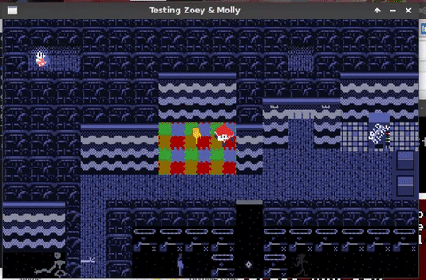
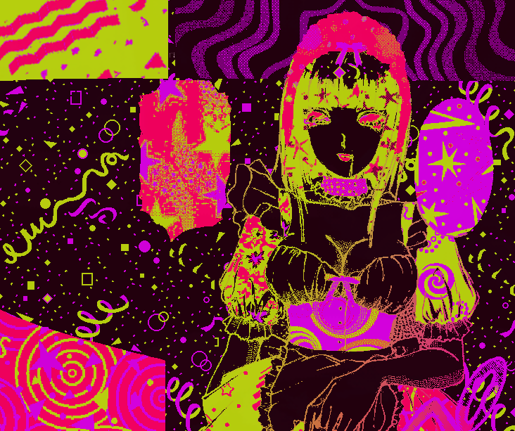

Lily's Art
Art from the cosmos—ALIEN MIND PROJECTIONS of tabletop games, graphic art, computer games. Please also eyeball-consume Lily's resumé, which has lots of neat software like staticfuzz and some backround into Lily's charity work.

Computer Games
Lily has made a bunch of computer games, but here's what survived. Some of these items are incomplete or a "work in progress." You also may be interested in Lily's Sappho game engine and other computer-related game software on Lily's Resumé.
Zoe & Molly
It's more of an artsy and self-expressive game, based on my dreams, nostalgia, and feelings.
Zoey & Molly on GitHub, which includes standalone windows executable that runs in WINE, and a .deb.

RGB RPG
Some game I've long forgotten, made in OHRRPCE. I think the main character sprite is derived from Nayru from Zelda Oracle of Ages.
RGB (.zip) windows standalone executable which works in WINE.

Tabletop Games
I've created a few tabletop games! All of them revolve around simplicity and accessibility.
Rock, Paper, Scissors, Cells
One page tabletop RPG, uses one six sided die, and game maps composed of cells. Plans to eventually release some playing maps along with other expansions. I've played it with friends and it's fun, easy, and quick; we used a chess board to play, with pawns representing traps, and other pieces marking our players.
IndexCard RPG
Minimal tabletop RPG rules which fit on 5x3 inch index cards. Includes expansion cards and tools to create more rules. I played this a lot with friends, it is fun for quick duels, but the majority of strategy is in how you build your character. IndexCard RPG on GitHub.
Graphic art
Some of this content may be disturbing or triggering. A lot of Lily's art is focused on being a trans woman, sexuality, and mental illness, or just slime.
dayglo witch (nsfw)
A single page containing multiple pieces of art reappropriating 90s shemale smut hentai. A shrine to the experience of finding womanhood through the clandestine lense of "tranny" porn. View "dayglo witch" website.

Dadaist Electronic
I made this with Daniel Saylor. View dadaist electronik website.

Candyhands

Day factory

Slimegirl Collection